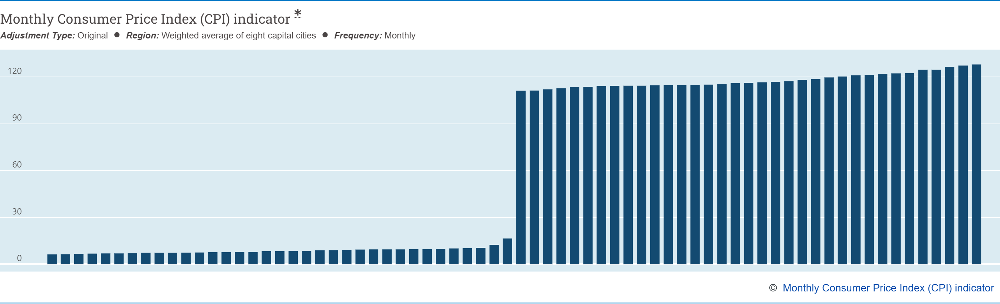
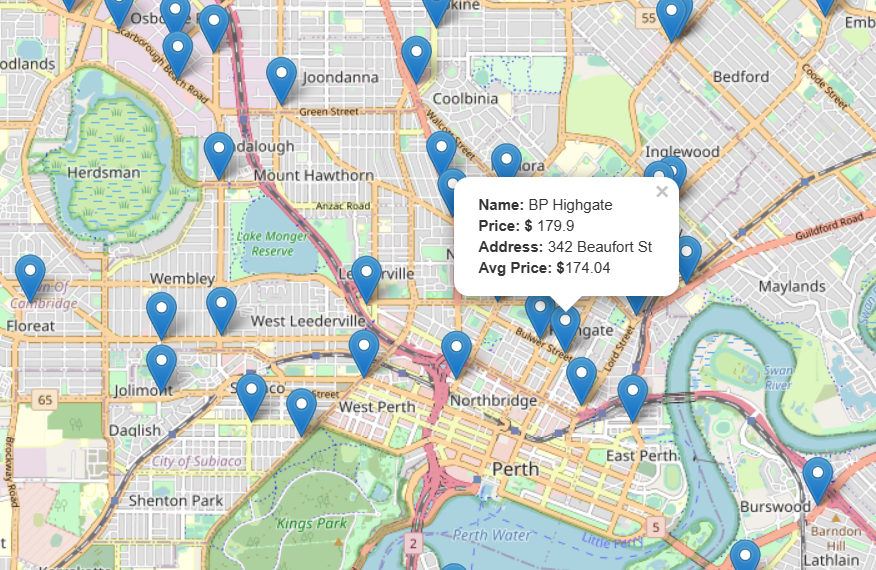

Real Overview of Budget and Alternatives (ROBA) Dashboard
Australian Bureau of Statistics

Monthly Consumer Price Index bar graph extracted from Australian Bureau of Statistics website, displaying the inflation in cost of living from the period June 2023 to December 2023
Fuel Price Comparison
Check out the prices of different petrol stations and how they stack up against the Metro average price!
Supermarket Price Comparison
A Coffee Comparison
Summary: CPI inflation the highest since 1990
The annual CPI movement of 7.8 per cent is the highest since 1990. The past four quarters have seen strong quarterly rises off the back of higher prices for food, automotive fuel and new dwelling construction. This is the highest since the ABS first published the series in 2003.
Price rises were seen across most food and non-food grocery products in the December quarter and fuel prices rose 2.2% in the December quarter.
With our project, we are trying to tell a story through an interactive dashboard that examines the inflation rate among various categories of household goods.
We have called our dashboard “Real Overview of Budget and Alternatives (ROBA)”. The ROBA dashboard was delivered through a Python Flask-powered API that was supported by HTML/CSS, JavaScript, Leaflet, and MongoDB.